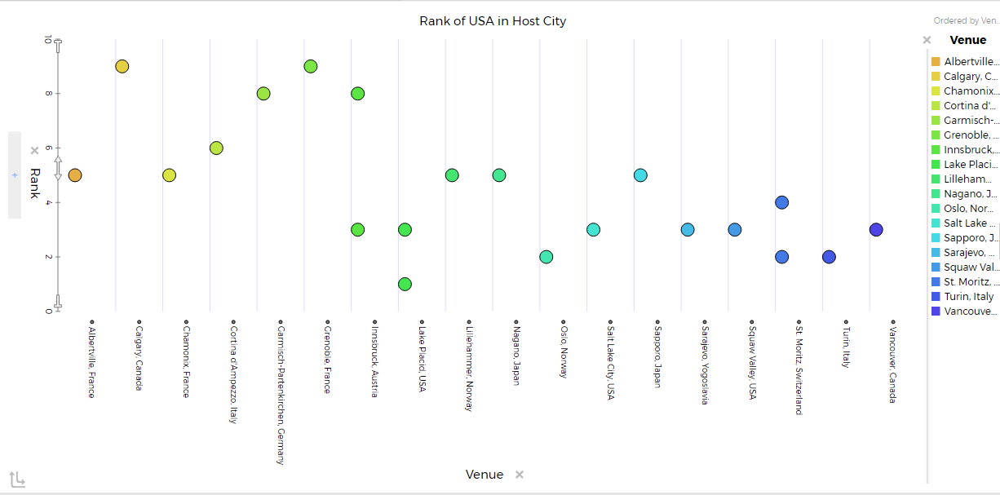
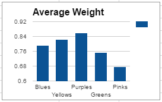

We collected data by using two data sets we found on Tuva Labs. They were "History of the Olympics" and "Winter Olympics". Using these data sets we were able to answer the question that we had.
In this photo we compared the height of the host city, to the actual host city. In this photo we can see a clear winner, which is Mexico City coming in at 7546 feet above sea level. With second place going to Munich, Germany with having 1,710 feet above sea level. This graph connects to our project question by providing some details on how the altitude of different countries can affect the ranking of the United States.
This chart is an example of the US and how its ranking changed during the Olympics based on countries it was hosted in. Overall it seemed to be that in Calgary, Canada, the US was placed 9th which is the worst overall placing for this list of examples. Surprisingly when the US played in the US it seemed to do pretty good. An example of this occurred in 1932, in Lake Placid, New York, where USA placed 1st place.
All in all this was a pretty fascinating experiment. Something pretty crazy we found out was that the most common color for deformities was purple. Surprisingly the most common deformity was dented. Out of 100 deformities we found out that 42 of them consisted of being dented. Second place goes to cracked, with having a total of 25 out of 100 meaning that first and second place both took over 67% of the deformities. One final but pretty important issue was the weight. The average or “perfect” M&M consists of weighing in at around 0.92g, while the common weight of all of the deformities was lower coming in at just 0.78g showing that the deformities are making a difference. In conclusion this was an overall fun experiment which gave me some key information when trying to find the perfect M&M.